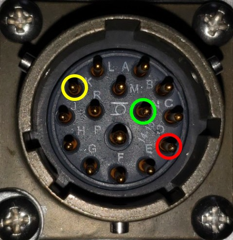

Connector Types and Pinouts
External Transmitter Control
The transmitter-control connector is a 15-pin female MIL-spec circular connector. This allows compatibility with older generation of Zonge equipment.

Pinout of the 15-pin MIL transmitter controller connector. POL is on pin D (red), COMMON (GND) is on pin N (green) and ON/OFF is on pin K (yellow).
Use Zonge cable type XMT/16-CN/6 for compatible transmitter/control connections.
GPS Antenna Connector
The GPS antenna connects via a 50 Ohm BNC connector. Use a 3.3 V active GPS antenna with minimum gain of 15 dB and maximum gain of 30 dB.